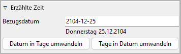
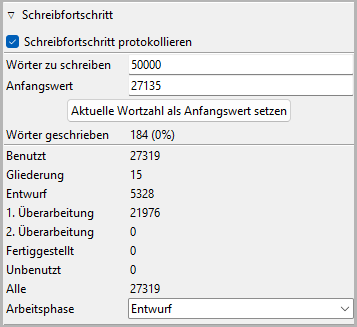

Bucheigenschaften
Die Bucheigenschaften-Ansicht öffnet sich im rechten Fenster,
wenn Sie im Baum „Buch“ wählen,
oder wenn Sie in der Werkzeugleiste auf  klicken.
Nach dem Öffnen eines novelibre-Projekts sehen Sie diese Ansicht.
klicken.
Nach dem Öffnen eines novelibre-Projekts sehen Sie diese Ansicht.
Titel, Beschreibung und Autor
Titel und Beschreibung erscheinen auf einer „Karteikarte“ zum Bearbeiten.
Die Bearbeitung von Buchtitel und Autor können Sie mit der Eingabetaste beenden. Änderungen an der Beschreibung werden übernommen, sobald mit der Maus irgendwo außerhalb des Texteingabefelds geklickt wird.
Titel und Beschreibung werden beim Export in ODT-Dokumente übernommen. Dort erscheinen sie in den Dokumenteigenschaften.
Diese Eigenschaften sind beispielsweise zu sehen, wenn der Mauszeiger im Windows Explorer über dem Dokument steht.
Sprache des Dokuments
Dieses Fenster öffnen oder schließen Sie mit Klick auf den Titel.

Sprachencode entsprechend ISO 639-1
Ländercode entsprechend ISO 3166-2
Diese Information steuert die Rechtschreibprüfung für Exportdokumente.
Ist die Einstellung nicht gesetzt, wird das Systemgebietsschema als Standardeinstellung verwendet.
Hinweis
Sie können die Sprache des Dokuments auch mit Writer einstellen oder ändern, dann wird sie beim Import übernommen.
Automatische Nummerierung
Dieses Fenster öffnen oder schließen Sie mit Klick auf den Titel.
- Kapitel/Teile automatisch nummerieren, wenn der Baum aktualisiert wird.
Ist dieses Auswahlfeld angekreuzt, werden alle Kapitel/Teile jedes Mal automatisch nummeriert, wenn der Baum aktualisiert wird. Die Titel werden dann durch ein
Präfix-Nummer-Suffix-Muster (ohne die Bindestriche) ersetzt.Hinweis
Wahlweise können Sie einzelne Kapitel/Teile über die Kapitel/Teil-Eigenschaften. von der automatischen Nummerierung ausschließen,
Die Eingabe von Präfix und Suffix können Sie mit der Eingabetaste beenden.
Bemerkung
Bitte auch ein Leerzeichen zur Trennung von Präfix oder Suffix von der Kapitel- oder Teilenummer vorsehen!
- Römische Kapitelnummern
Für die automatische Nummerierung sind arabische Ziffern wie „1“, „2“, „3“ … voreingestellt. Wenn dieses Auswahlfeld angekreuzt ist, werden stattdessen römische Ziffern wie „I“, „II“, „III“, „IV“ … verwendet.
- Kapitelnummerierung in jedem Teil neu beginnen
Per Voreinstellung werden die Kapitel über die Teile hinweg fortlaufend nummeriert. Wenn dieses Auswahlfeld angekreuzt ist, beginnt die Kapitelzählung in jedem Teil erneut mit „1“
Feldnamen
Dieses Fenster öffnen oder schließen Sie mit Klick auf den Titel.
novelibre bietet einige vorgefertigte Felder für Abschnitte und Figuren, um Informationen zu speichern, die beim Schreiben zur Hand sein sollten. Sie können diese Felder so benennen, wie es in Ihr individuelles Story-Planungskonzept passt. Die Bearbeitung der Kategorien können Sie mit der Eingabetaste beenden.
- Keine Szene
Wenn Sie im „Szene“-Fenster eines Abschnitts Keine Szene auswählen, sehen Sie die drei Texteingabefelder, deren Namen Sie hier eingeben. Diese Kategorien gelten dann für alle Abschnitte, die keine Szenen darstellen.
- Andere Szene
Wenn Sie im „Szene“-Fenster eines Abschnitts Andere auswählen, sehen Sie die drei Texteingabefelder, deren Namen Sie hier eingeben. Diese Kategorien gelten dann für alle Abschnitte, die andere Szenen als „Aktion“ und „Reaktion“ darstellen.
- Figur
Hier geben Sie die Namen der zwei Figuren-Felder ein, die Sie in der Figureneigenschaftsansicht öffnen können.
Hinweis
Sie können einen Feldnamen auf den voreingestellten Wert zurücksetzen, indem Sie das Eingabefeld löschen und die Eingabetaste drücken.
Erzählte Zeit
Dieses Fenster öffnen oder schließen Sie mit Klick auf den Titel.
Um den Überblick über die erzählte Zeit zu behalten, können Sie jedem Abschnitt Datums- und Zeitinformationen zuordnen. Das Datum können Sie spezifisch (JJJJ-MM-TT) oder unspezifisch (Anzahl der Tage, z.B. seit Beginn) eingeben.
- Bezugsdatum
Das Bezugsdatum ist optional. Es kann dazu dienen, unspezifische Datumsangaben in spezifische umzuwandeln, oder umgekehrt. Mit Hilfe des Bezugsdatums können Zeitleisten-Plugins aus Abschnitten ohne spezifischem Datum Ereignisse erzeugen.
Format: JJJJ-MM-TT, entsprechend ISO 8601.
Hinweis
Selbst wenn Sie keine spezifischen Datumsangaben in Ihrer Geschichte benötigen, kann es hilfreich sein, ein Bezugsdatum anzugeben. Auf diese Weise wird der Wochentag zusammen mit dem unspezifischen Datum, angezeigt, und für die Figuren im Abschnitt können Sie das Alter abrufen, sofern Sie ein Geburtsdatum angegeben haben.
- Datum in Tage umwandeln
Damit können Sie spezifische Abschnitts-Datumsangaben in Tage, bezogen auf das Bezugsdatum, umwandeln.
- Tage in Datum umwandeln
Damit können Sie unspezifische Abschnitts-Datumsangaben (auf das Bezugsdatum bezogene Tage) in spezifische Datumsangaben umwandeln.
Bemerkung
Bei umfangreichen Romanen kann die Umwandlung eine Zeitlang dauern, je nach Leistungsfähigkeit Ihres Systems. Solange die Konvertierung läuft, zeigt die angeklickte Schaltfläche „Bitte warten …“ an.
Hinweis
Die oben beschriebenen Befehle konvertieren alle datierten Abschnitte auf einmal. Wenn Sie nur einzelne Abschnitte umwandeln wollen, gehen Sie einfach zu den Abschnittseigenschaften.
Schreibfortschritt
Dieses Fenster öffnen oder schließen Sie mit Klick auf den Titel.
Mit novelibre können Sie sich ein Ziel für die Wortanzahl setzen und Ihren Fortschritt verfolgen.
Bemerkung
Unabhängig von den hier gemachten Einstellungen können Sie die Wortanzahl jederzeit in der Statuszeile sehen.
- Schreibfortschritt protokollieren
Per Voreinstellung speichert novelibre täglich Protokolleinträge mit den Wortanzahlen ab. Sie können das abschalten, indem Sie den Haken im Auswahlfeld Schreibfortschritt protokollieren entfernen.
Hinweis
Sie können das Protokoll Ihres täglichen Schreibfortschritts betrachten, wenn Sie das nv_progress-Plugin installieren.
- Wörter zu schreiben
Hier können Sie eine Zahl (ohne Dezimaltrenner oder Leerzeichen) eingeben, die Ihr Schreibziel in Wörtern angibt. Die Eingabe können Sie mit der Eingabetaste beenden.
- Anfangswert
Hier können Sie eine Zahl (ohne Dezimaltrenner oder Leerzeichen) eingeben, welche die Anfangs-Wortanzahl für Ihr Schreibziel angibt. Die Eingabe können Sie mit der Eingabetaste beenden.
- Aktuelle Wortzahl als Anfangswert setzen
Klicken Sie auf diese Schaltfläche, um die aktuelle Wortanzahl in das Anfangswert-Feld einzutragen.
- Wörter geschrieben
Hier wird die Differenz zwischen Ihrer derzeitigen Wortanzahl und dem Anfangswert angezeigt. Der Prozentwert bezieht sich auf Ihr Schreibziel.
- Arbeitsphase
Diese Einstellung wird für den Farbgebungsmodus „Arbeitsphase“ benötigt.
Abschnitte mit dem selben Fertigstellungsstatus wie die eingestellte Arbeitsphase sind schwarz.
Abschnitte, die der eingestellten Arbeitsphase vorauseilen, sind grün.
Abschnitte, die der eingestellten Arbeitsphase hinterherhinken, sind magenta.
Links
Dieses Fenster öffnen oder schließen Sie mit Klick auf den Titel.

Das ist eine Liste für Links zu Bildern und Recherche-Dokumenten.
Obwohl novelibre Daten zu Figuren, Schauplätzen und Gegenständen verwalten kann, ist es nicht die richtige Anwendung für umfangreichen Weltenbau. Dafür sollten Sie leistungsfähigere Softwareprogramme verwenden, zum Beispiel Zim Desktop Wiki. Dazu kann novelibre Hyperlinks zu den Textdateien erzeugen, welche Sie schnell zu den richtigen Stellen im Wiki führen.
Oder Sie haben einige Bilder gesammelt, die Sie beim Schreiben inspirieren. Dann erzeugen Sie einfach Links zu diesen Bildern und lassen Sie novelibre diese mit Ihrem System-Bildbetrachter öffnen.
Tipp
Wenn Sie mehrere Bilder z.B. zu einer Figur in einem Ordner gesammelt haben, den Ihr Standard-Bildbetrachter durchsuchen kann, ist ein einziger Link auf eines dieser Bilder ausreichend.
Die Links werden in einer Liste angezeigt, und zwar in der Reihenfolge der Eingabe.
- Link hinzufügen
Wenn Sie auf
 klicken, öffnet sich ein Dateiauswahldialog.
Die ausgewählte Datei wird der Linkliste hinzugefügt.
klicken, öffnet sich ein Dateiauswahldialog.
Die ausgewählte Datei wird der Linkliste hinzugefügt.Hinweis
Der Dialog zeigt zunächst nur Bilddateien. Für andere Dateitypen ändern Sie die Auswahl in der unteren rechten Ecke.

- Link entfernen
Wenn Sie auf
 klicken oder die
klicken oder die Entf-Taste drücken, wird der ausgewählte Link von der Liste entfernt.- Link öffnen
Wenn Sie auf einen Link doppelklicken, oder auf
 klicken,
Wird die Datei, auf die der Link verweist, mit der Standardanwendung
für ihren Typ geöffnet.
klicken,
Wird die Datei, auf die der Link verweist, mit der Standardanwendung
für ihren Typ geöffnet.Hinweis
Falls Sie bestimmte verlinkte Dateien mit einer anderen Anwendung als der System-Standardanwendung öffnen wollen, können Sie eine „Programmstarter“-Einstellung vornehmen. Dafür erzeugen Sie einfach eine Textdatei namens launchers.ini im Verzeichnis
.novx/config(wo alle Konfigurationsdateien liegen). Hier in können Sie Erweiterungen Anwendungsprogramme zuordnen.Zim Desktop-Wiki-Seiten sind ein Sonderfall. Dafür ordnen Sie die .zim-Erweiterung dem Zim-Programm zu.
Dieses Beispiel zeigt eine Einstellung, die novelibre Textdateien mit der Zim Desktop Wiki-anwendung öffnen lässt, statt mit dem Standard-Texteditor:
[SETTINGS] .zim = C:/Program Dateis (x86)/Zim Desktop Wiki/zim.exe

Buchumschlag-Miniaturbild
Eine Buchumschlag-Vorschau wird zusammen mit den Bucheigenschaften angezeigt, wenn Sie im Projektverzeichnis eine PNG-Bilddatei mit dem selben Namen wie das Projekt bereitstellen. Die empfohlene Bildbreite ist 100 bis 200 Pixel.